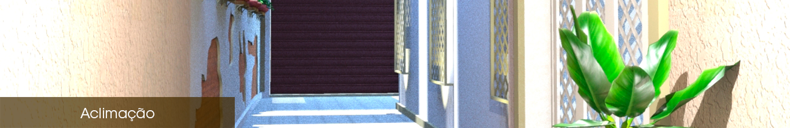

Formada como arquiteta desde 2010 pela Universidade Anhembi Morumbi, e também como designer de interiores desde 2004, a arquiteta Camila Pinotti já participou de projetos em diversas áreas, tais como: cinemas, concessionárias, residências, motéis, etc.
Sempre atuando dentro de escritórios no desenvolvimento de projetos, há 3 anos mudou para a área de construção civil, a fim de ampliar o conhecimento e alcançar um maior diálogo entre o projeto e a execução. Seus projetos procuram soluções diferentes para cada espaço através de uma visão contemporânea, sem deixar de lado a praticidade e conforto.
Graduated as architect since 2010 by Anhembi Morumbi University, and also as Interior Designer since 2004, the architect Camila Pinotti has already taken part in projects of several areas such as: cinemas, dealers, residences, motels, etc.
Always acting within offices in project development, she moved 3 years ago to civil construction, in order to expand knowledge and achieve greater dialogue between design and execution. Her projects seek different solutions to each space through a contemporary view, without putting aside handiness and comfort.